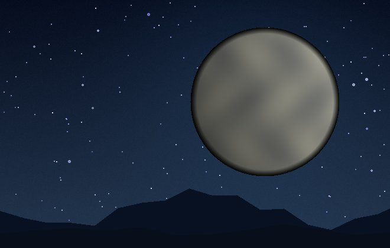
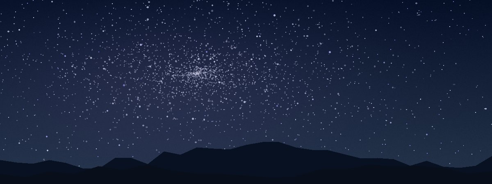
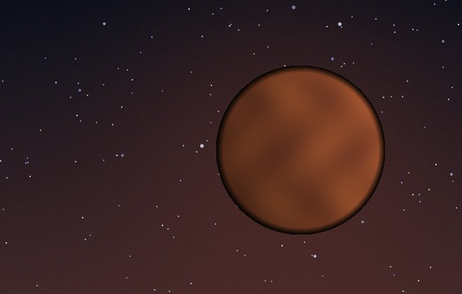
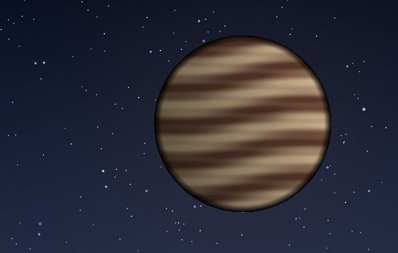
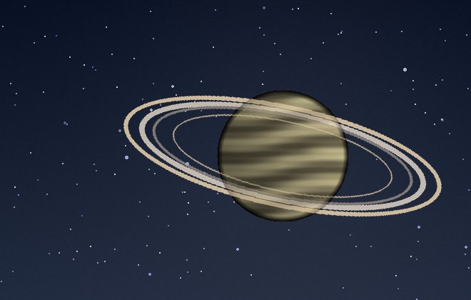
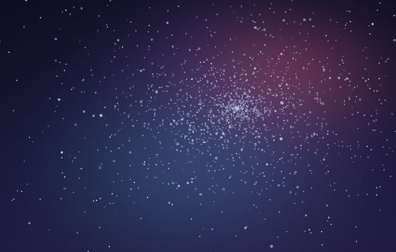
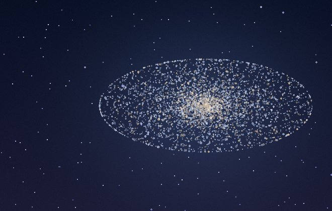

The Moon
Our closest neighbour is one of the easiest things to observe at night.
Details
Look near the line between light and shadow. Craters and mountain ridges are easier to see there.
A simple guide to a few amazing things you can find above us.




Our closest neighbour is one of the easiest things to observe at night.

The red planet is small in our sky, but it is always worth finding.

Jupiter is a favourite target thanks to its bright appearance and moons.

Saturn is famous for its rings, which make it unforgettable through a telescope.

A glowing cloud of gas and dust in the constellation Orion.

Andromeda reminds us how much farther the night sky reaches.